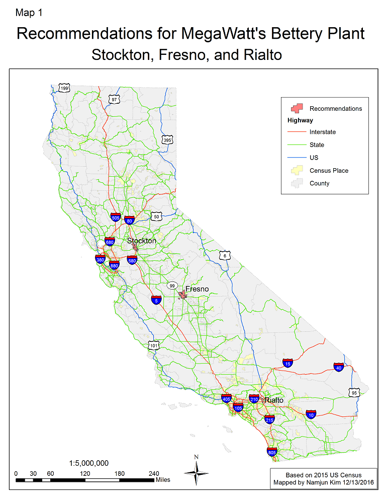
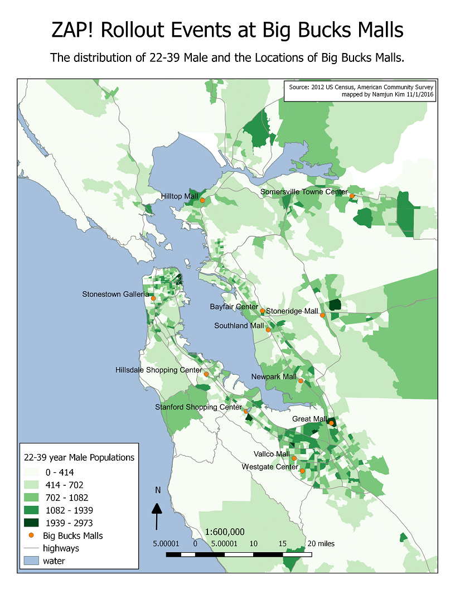
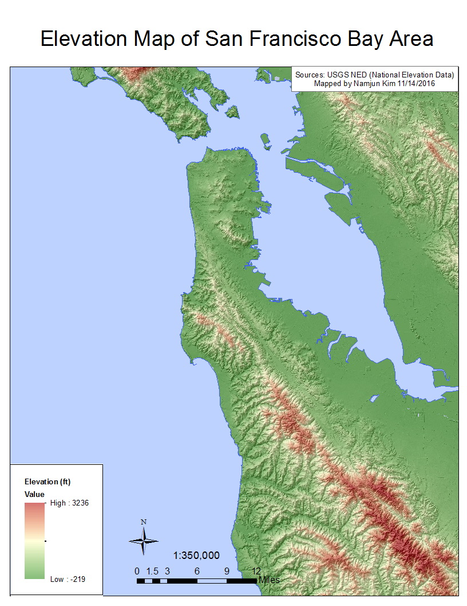

(look around using arrow keys)
The number of Starbucks stores by state and population were mapped mostly using Windows Paint and Powerpoint.
The blank map is from Super Teacher Worksheets (http://www.superteacherworksheets.com/)
(look around using arrow keys)
Urban area and environments changes before and after the construction of Incheon International Airport.
Remote sensing data (LandSat satellite images) processing and unsupervised classifications were done using Idrisi Selva.
(look around using arrow keys)
Recommendations of a New Factory Site for an imaginary Electric Car Company using ArcGIS
(look around using arrow keys)
using QGIS
(look around using arrow keys)
using ArcGIS
(look around using arrow keys)
Cartograms of number of Dunkin Donuts stores and Starbucks stores by state.
The cartograms were generated using ScapeToad 1.1 and the maps were drawn using Adobe Illustrator.